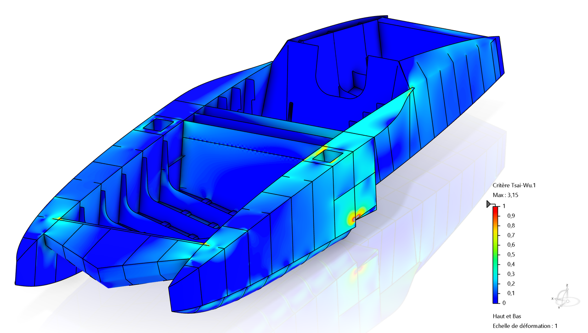

Full-Vessel Composite Structural Analysis
Composite layup optimisation and structural assessment before manufacturing.
Problem Assess the composite boat structure under its defined load cases and identify the layup changes needed before manufacturing.
My contribution Built the full-vessel model, optimised composite layups and checked the results against physical bending tests.
Outcome The resulting design progressed to manufacturing by EPFL Solar Boat and NTPT.
View project